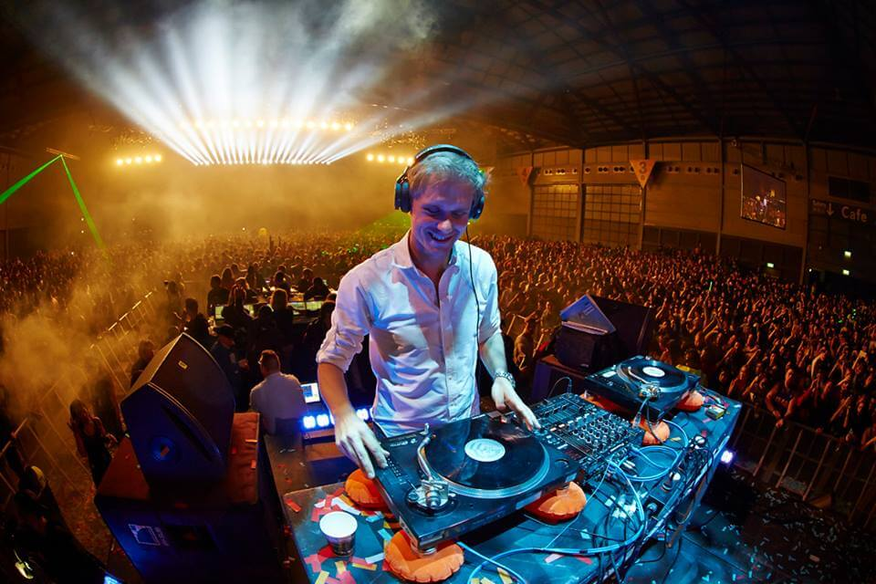
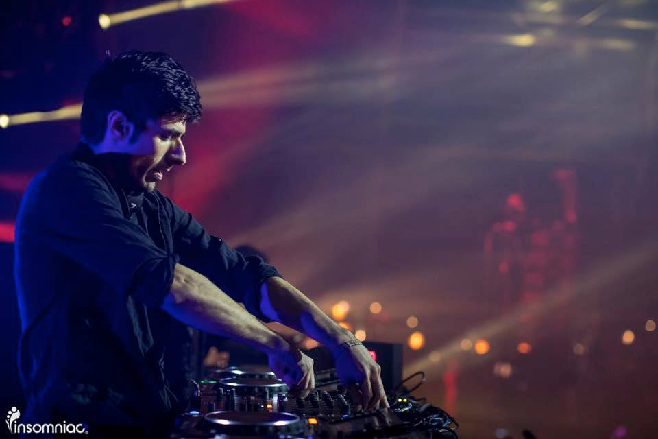

Este es un hombre impulsado por una pasión desenfrenada e implacable por la música. Armin van Buuren es un perfeccionista nacido, que se esfuerza por mantenerse en la cima de la escena que ayudó a construir.
Como el abanderado del movimiento trance, es una de las figuras más influyentes en electroerosión en todo el mundo. A pesar de que vive una vida extraordinaria como uno de los DJs más populares del mundo, siempre ha sido un tipo con los pies en la tierra. Armin van Buuren está constantemente en movimiento, ya sea creando música en su estudio o en camino a su próximo club de lujo o espectáculo de festival en todo el mundo.
ARMIN: "No es solo amor por la música, es mi pasión. Va más allá del gusto, y más allá de un hobby. Se trata de una forma de vivir. La música es esencial para mi vida ".
Debido al éxito de dichos remixes, muchos músicos y productores han pedido que Armin remezcle sus canciones, pero el artista ha rechazado muchas de estas ofertas ya que ha decidido enfocarse en su propia música.


Niles Hollowell-Dhar, más conocido como "KSHMR" es un DJ y productor indo-estadounidense de EDM, actualmente radicado en Berkeley, California. Desde 2013, comenzó a producir bajo el nombre de KSHMR después de haber dejado el dúo The Cataracs.
En 2016 ha sido nombrado como el DJ número 12 del mundo, según la revista DJMAG, siendo la entrada más alta en la lista. En 2017 vuelve y repite la misma posición 12, según la revista DJMAG, además coopero con los siguines exitos: